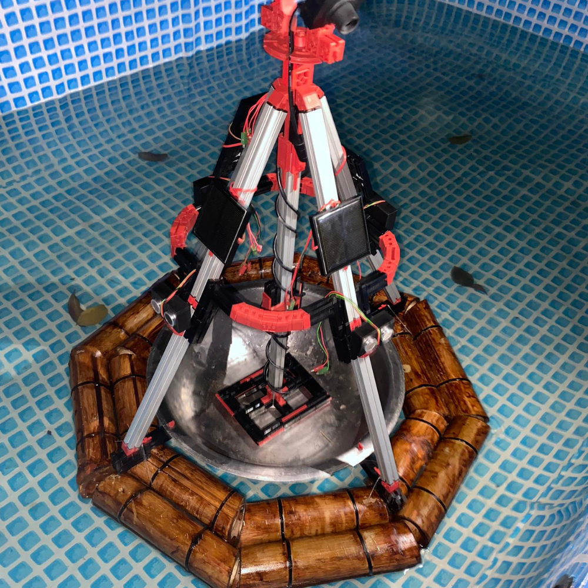

SalbaKita
An Intelligent Water-Rescue & Cleanup Robot
▶ Monitor PanelAbout
Summary
SalbaKita introduces a sustainable, multifunctional aquatic robot designed to tackle major issues in water safety, marine life conservation, and pollution control. Made from eco-friendly, repurposed materials like bamboo, wood, and plastic bottles, Salbakita reflects a commitment to both technological innovation and environmental responsibility.
Key Features
-
Buoy System ▼
SalbaKita is designed with an integrated buoy system that allows it to maintain stable flotation on the water surface. This ensures the robot remains visible and accessible during emergencies, making it easier for individuals to locate and use it when in distress.
 -
Real-Time Monitoring ▼
Equipped with a cameras that captures surroundings at 360 degrees with 1-megapixel resolution, SalbaKita allows real-time video monitoring directly connected to a computer. This enables coastguards and responders to oversee the robot’s surroundings and activity as it operates in the water.

-
Distress Signal Activation ▼
SalbaKita features an Emergency Alarm System that individuals can activate by pulling a rope. This triggers a 110-decibel alarm, audible up to 17.6 meters away, immediately alerting nearby responders and increasing the chance of timely rescue.

-
GPS & Bluetooth ▼
The integration of a Global Positioning System (GPS) allows SalbaKita’s location to be tracked accurately in real time. This feature supports precise monitoring and coordination during rescue operations or environmental missions.

-
Autonomous Mobility ▼
With a built-in propeller system, SalbaKita is capable of autonomous movement through water. This allows it to navigate swiftly and efficiently to target locations with a speed of 512 m/s², ensuring timely arrival during emergencies or clean-up tasks.

Demo
Watch SalbaKita in action as it performs water-rescue and cleanup operations.
Technical Details
-
Feature 1 Title ▶Placeholder description for feature 1. This will expand on click.
-
Feature 2 Title ▶Placeholder description for feature 2.